Your Skin,Finally Seen.
Four shoot days, each with one job. Seven finished pieces and a UGC program (short phone videos of your real clients in their own words), each ending on a button already on your site. Five looks and 39 planned shots get us there.
Love something? Tap Circle this under any frame or shot. Your circles collect at the bottom of the screen, ready to text me.
Your Skin, Finally SeenConcept frames · Roll 01
Five looks.
Mix them however you like.
Every story can live in any of these. A testimonial can sit on black or in your lounge. An opening can be acted or real. We choose per piece, not once for the whole campaign.
Pick an open, a voice and a close.
That’s a spot.
We shoot every piece so it cuts with every other piece. Flip each reel, shuffle all three, or play the spot. Every spot ends on your butterfly.
:30 · the voice gets room to land.
Open0:00–0:06
The garage at dawn1 / 7 · Cinema camera · Concept frame
On screen
Twelve-hour shift. No time for tweezers.
Shot 35Voice0:06–0:24
Client on black1 / 6 · Cinema camera · Concept frame
In their words
A real client, on black, in her own words.
Shot 22Close0:24–0:28
The mirror check1 / 6 · Cinema camera · Concept frame
On screen
Looking, not checking.
Shot 18End card0:28–0:30
Your butterflyEvery spot · Cinema camera · Concept frame
On screen
SKINPLUSBYOROYO, Little Elm.
Shot 057 openings × 6 voices × 6 closes = 252 possible combinations, each in three lengths, all from the same shoot. We cut the strongest for launch; the rest stay ready for fresh ads.
The Listening Room
The story, and the person telling it.
With nothing else in the room to look at, people listen. This is the look for client stories, for the ads, and for Thirty Seconds: your short vertical series where you answer one real client question to camera.
We build it inside your studio: black behind the chair, soft light on the face. No second location, and your clients stay somewhere they already feel safe.
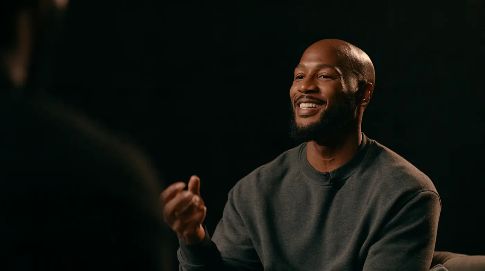
Your studio
Your real rooms, shot like a campaign.
We started from photos of your studio and built each frame on the real room: the same walls, the same chandelier, the same gold letters, lit and cast the way we would shoot them.
The gold wall. Home of your founder’s film. The words glow behind you, never across your face.
The lobby at golden hour. Chandelier on, overheads off. The walk‑in starts at the door and ends at your desk.
Suite 2201. The arrival: the door opens and the story starts.
The lounge. Client stories in your grey chairs, your shelves glowing behind them.
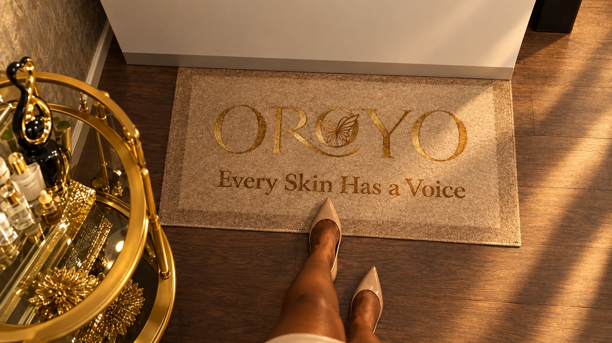
“Every Skin Has a Voice” is already on your floor. It becomes our top-down opener.
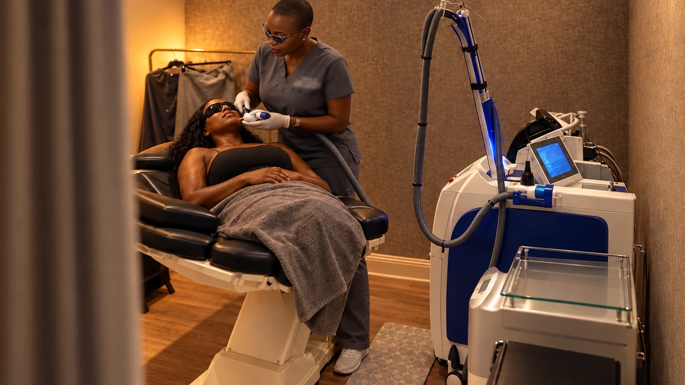
The treatment room, cleared and lit. The laser and the gold rail stay in frame.
Their world
Their day, acted. The lines stay short.
The first seconds of every ad, in the places your clients actually live: the hospital garage at dawn, the video call, the courthouse restroom.
Every before is a private check: the visor mirror, the call preview, the razor. The after is the same day without one.
Actors play these everyday moments. They never speak as clients.

Twelve-hour shift. No time for tweezers.

Camera on. Mind on the meeting.

Give the razor a rest.

Court at nine. One last mirror check.
The editorial
Your aftercare, lit like a launch.
Your two OROYO aftercare products get their own day: the photoshoot, Day 1. Beauty stills and short films, slow, glossy and close. Sets in cream, stone and forest green, hard morning sun with palm-leaf shadows, and a prop butterfly on bare skin for the end card.
In these frames, your Even Bright Serum and Clear Pro Pads stand in. Point me to the two you send home after every session, and they get the hero light.
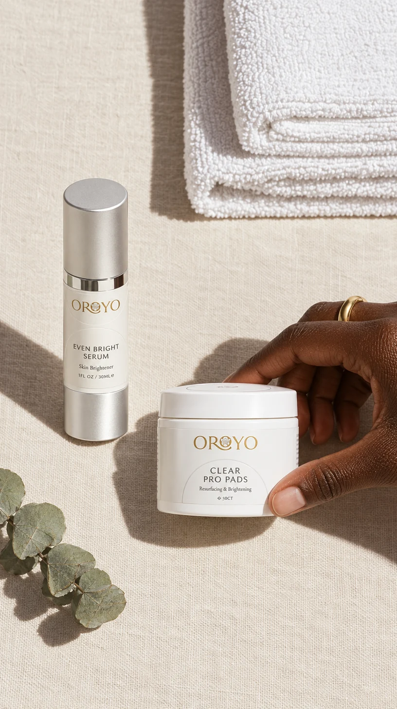
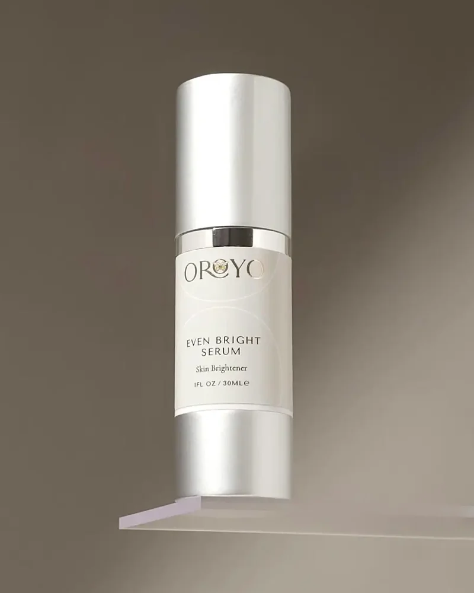
In their own hands.
The front camera is the new mirror.
Everything else on this page is shot on a cinema camera. Look E is UGC: short phone videos of your real clients in their own words, the kind people trust before they book. I film them on my phone, front-camera style, and hand it over for the selfie moments, so every clip feels native to the feed, and I have all of it to edit. Every client signs a release first.
Love something? Tap Circle this and it collects at the bottom, ready to text me.
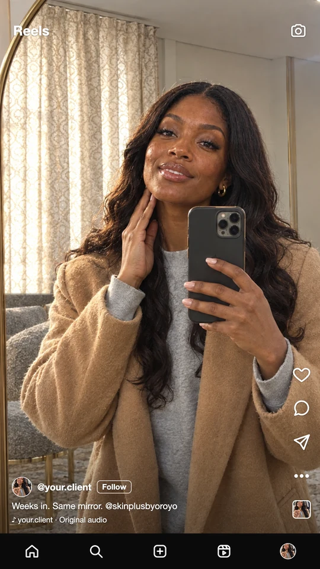
Same mirror. Two cameras.
Every frame on this page carries one of these two labels. The cinema camera makes the campaign look like a campaign. The phone is what people believe in the feed, so UGC stays raw.
Two clients, two clips.
Each one runs from the client’s own handle, if they agree: Reels on Instagram, the same cut on TikTok.
Two UGC clips. Tap either one to watch it.
UGC · phoneThe Console · :20 · posted from her handle, labeled Paid partnership
Hook · 0:00–0:03 · Day 3 · 1 of 6
These live in my console.
All on my phone on Day 3, with a client already a few sessions into her series. The car comes last on the day and leads the edit. It ends on your card and the platform’s own Book now button. Lines are placeholders: real clients say it their own way, after signing a release. Concept frames.
Hook0:00–0:03Day 3
These live in my console.
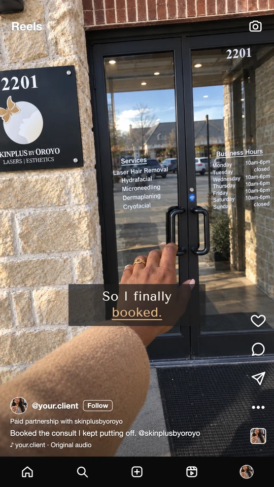
Door0:03–0:06Day 3
So I finally booked.
Consult0:06–0:10Day 3
The person at my consult…
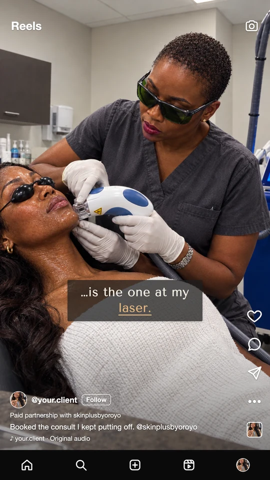
Laser0:10–0:14Day 3
…is the one at my laser.
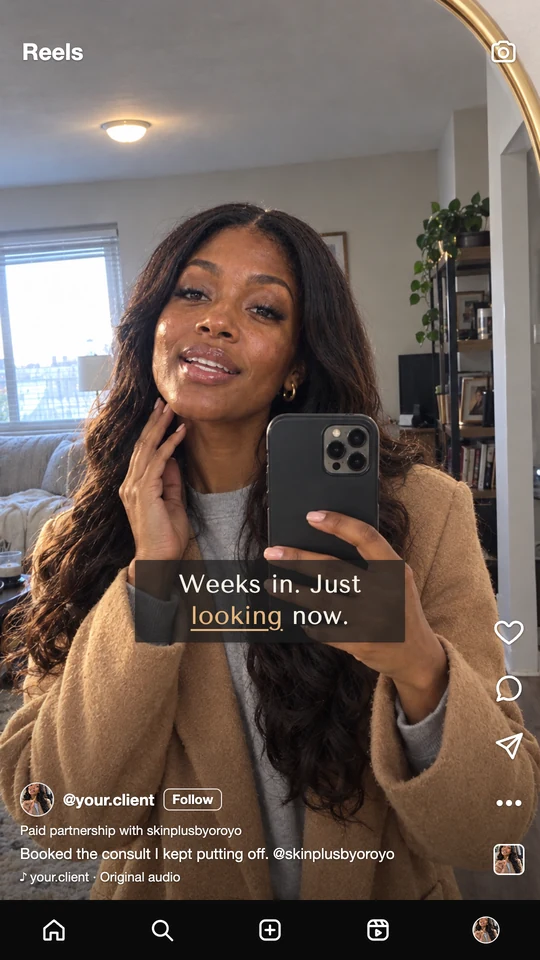
Payoff0:14–0:18Day 3
Weeks in. Just looking now.
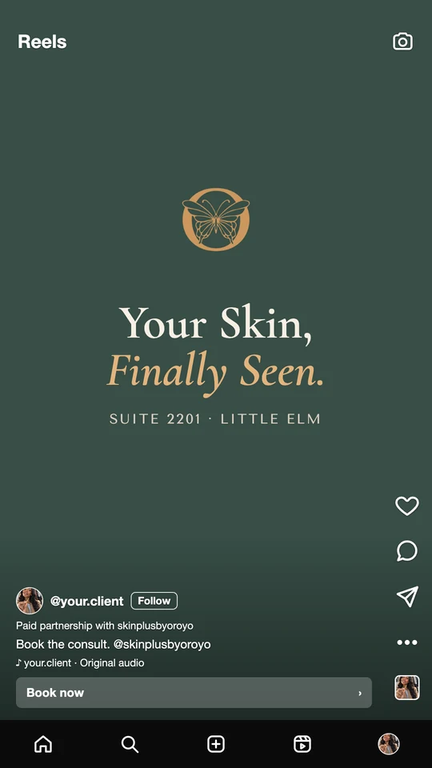
End0:18–0:20Edit
Book now.
UGC · phoneCamera On · :15 · posted from his handle, labeled Paid partnership
Hook · 0:00–0:03 · Day 3 · 1 of 5
What I check before every call.
All on my phone on Day 3: his consult in your studio, then his desk, his mirror and his call at his place in the afternoon. He’s a few sessions into his series. It ends on your card and the platform’s own Book now button. Lines are placeholders: real clients say it their own way, after signing a release. Concept frames.
Hook0:00–0:03Day 3
What I check before every call.
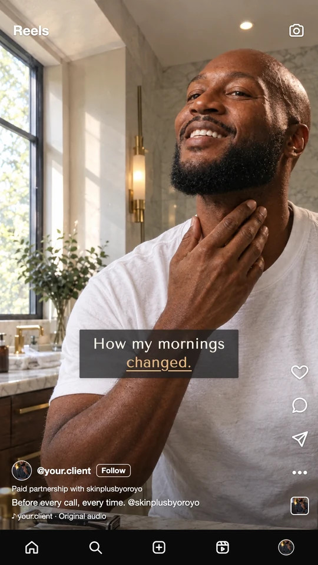
Mirror0:03–0:07Day 3
How my mornings changed.
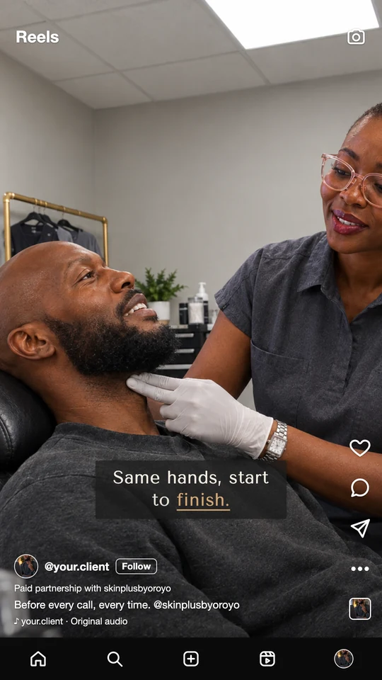
Consult0:07–0:11Day 3
Same hands, start to finish.
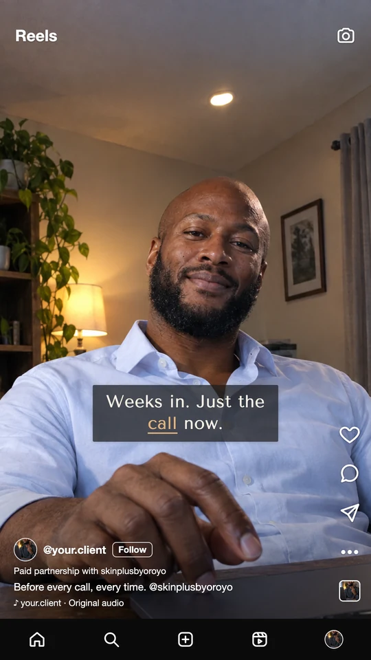
The call0:11–0:13Day 3
Weeks in. Just the call now.
End0:13–0:15Edit
Book now.
Three series, each with its own hook.
The Console
Her, in her car after a session.
:20–:40
Hook: the tweezers she keeps in the console.
See the clip ↑Camera On
Him, at his desk before a call.
:15–:30
Hook: what he checks before every call.
See the clip ↑Reply to Patricia
You, between clients, phone at arm’s length.
:20–:45
Hook: a real comment answered with the reply sticker, or a DM question typed on screen, no names.
See shot 31 ↓
What the UGC program includes
- Casting from your client list
- We write the invitation in your voice and cast a mix of stories, her side and his.
- Releases and appearance choice
- Signed before filming: face, voice only, or hands and skin.
- Shot on my phone
- Front-camera style, handed to the client for the selfie moments, so every clip feels native to the feed, and I have all of it to edit.
- A day of its own
- Day 3 belongs to UGC, so it never borrows time from the cinematic setups.
- Reply to Patricia
- Real comments from your page, answered on video with the platform’s own reply sticker, in a batch.
- Native editing and captions
- Feed-native cuts with captions in your type. Polls, questions and links use the platforms’ own stickers.
- A claims check on every line
- Texas laser ad rules, FTC disclosure, typical results only. Final approval is always yours.
- Partnership ads
- Run from clients’ own handles, only with their permission, always under the platform’s Paid partnership label.
- Hook testing
- UGC against the cinematic opens, read against Book Now taps.
At launch: the two flagship clips with alternate hooks for testing, short cutdowns from the UGC day, the first Reply to Patricia batch, partnership ads live under clients’ names, a profile grid and highlight covers in the campaign’s look, and story templates.
Your part: one invitation to your client list, two of your regular sessions on Day 3, one batch of replies between clients, and your yes on every cut.
The hooks and the rules
- The tweezers I keep in the car.
- Camera on, chin up, no filter.
- What I’d tell anyone who tried laser before.
- How my mornings changed.
- Where I’m headed after my session.
Real clients only, each with a release. If a client receives anything for a clip, the post says so, and nobody is asked to say only good things.
Every hook and ad line stays on hair and routine. Texas rules bar laser ads that claim it’s risk-free or a medical treatment, so we never say safe, painless, permanent, or that it treats a condition.
Clips can show progress on your page. In paid ads we skip side-by-side before-and-afters, and any progress a client shows is typical, not a best case.
Templates we deliverYour feed, one campaign.
- Partnership postTemplate design
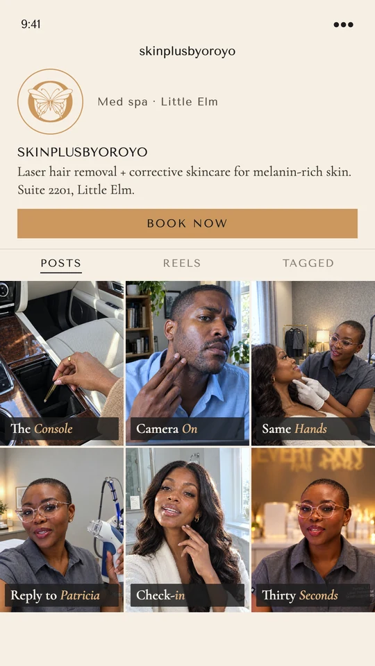
Your profile and highlightsTemplate design- Client quoteTemplate design
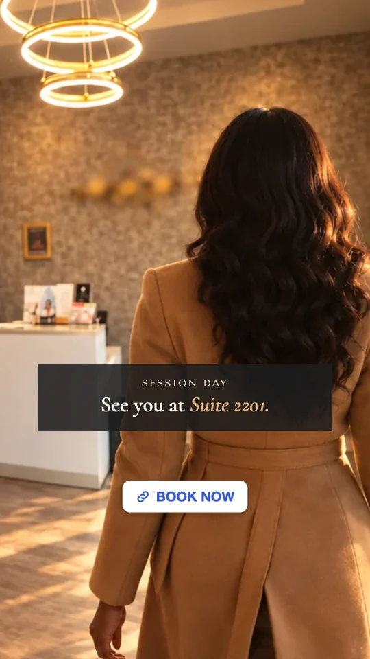
Session day, link stickerTemplate design
Polls, question boxes, link stickers and the Paid partnership label are the platforms’ own and can’t be restyled, so every template leaves room for them.
Four days,
one job each.
Day one is the photoshoot. Day two is cinematic, inside your studio, blocked around your appointments with time to light every room. Day three is UGC, on my phone. Day four goes out to their world at first light. Every shot already has a place in a finished piece.
Love something? Tap Circle this and it collects at the bottom, ready to text me.
Mon–Thu, Nov 30–Dec 3 or Dec 7–10. Four days in a row, either week, with Thanksgiving already behind us. The Campaign uses Days 1, 2 and 4; The Campaign + UGC adds Day 3.
Showing 39 of 39 shots
The photoshoot
The editorial set, lit for stills: your aftercare, the beauty portraits and the butterfly end card.
MorningShots 01–02The product set
- 01Cinema cameraThe editorial · Concept frame
Products on stone, morning sun
Your aftercare on travertine in hard morning sun, palm-leaf shadows falling across the stone and the bottles.
- Camera
- 100mm macro · stills, then a slow push
- Light
- Hard morning sun through palm leaves
FeedsBeauty editorial · Spots :15 :30 :60 · Launch emails
- 02Cinema cameraThe editorial · Concept frame
Top-down flat lay
Straight down on cream linen: a towel, eucalyptus, the serum on its side. Her hand lifts one pad from the open jar. Built vertical.
- Camera
- 50mm · straight overhead · 9:16 first
- Light
- Raking morning light from the left
FeedsBeauty editorial · Thirty Seconds · Launch emails
AfternoonShots 03–05Beauty portraits
- 03Cinema cameraThe editorial · Concept frame
Beauty portrait with product
Bare shoulders, forest green, the bottle at the collarbone.
- Camera
- 85mm · eye level
- Light
- Soft key, gold bounce
FeedsBeauty editorial · Spots :15 :30 :60 · Launch emails
- 04Cinema cameraThe editorial · Concept frame
Every shade, one frame
Three women, three deep tones, wrapped in your OROYO towels.
- Camera
- 50mm · eye level
- Light
- Big soft key
FeedsBeauty editorial · Hero film · Launch emails · In-studio displays
- 05Cinema cameraThe editorial · Concept frame
The butterfly still
A prop butterfly on a bare shoulder, photographed. It holds its pose where a live one won’t. Every spot ends on it, with your mark.
- Camera
- 100mm · a still, not motion
- Light
- Warm window light
FeedsBeauty editorial · Spots :15 :30 :60 · Hero film · Launch emails · In-studio displays
Cinematic, your studio
Suite 2201, blocked around your appointments, with time to light every room.
MorningShots 06–09Arrival
- 06Cinema cameraYour studio · Concept in your room
The door, Suite 2201
Our nurse, off her shift. A hand on the handle, the door swings open, she steps in.
- Camera
- 35mm · waist height · locked off
- Light
- Daylight through the glass
FeedsSpots :15 :30 :60 · Client stories · Hero film
- 07Cinema cameraYour studio · Concept in your room
Walk-in under the chandelier
Inside, your client in the camel coat crosses the lobby under the chandelier, toward you at the desk.
- Camera
- 24mm · slow push behind her
- Light
- Chandelier on, overheads off
FeedsSpots :15 :30 :60 · Client stories · Hero film
- 08Cinema cameraYour studio · Concept in your room
The rug, top-down
At the desk, her shoes step onto “Every Skin Has a Voice,” already on your floor.
- Camera
- 24mm · overhead · slow tilt up
- Light
- Lobby lamps on
FeedsSpots :15 :30 :60 · Hero film · Thirty Seconds · Launch emails
- 09
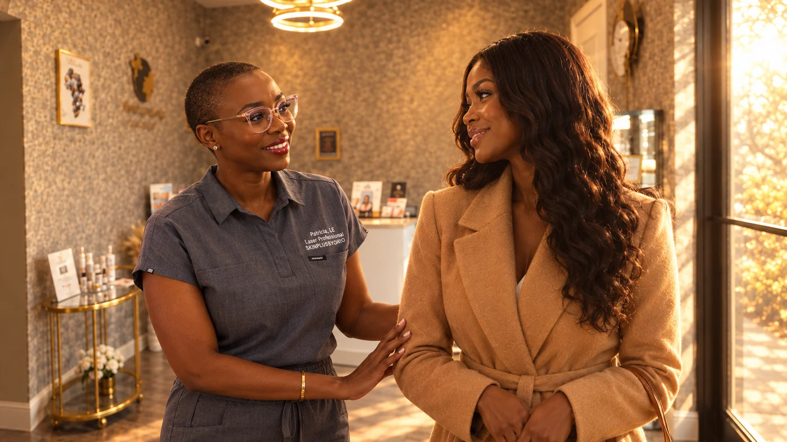
Cinema cameraYour studio · Concept in your roomThe welcome
You greet her by name at the desk. The relationship starts here and stays with you.
- Camera
- 50mm · beside the desk
- Light
- Window light plus the chandelier
FeedsFounder’s film · Client stories · Hero film
Late morningShots 10–12The gold wall
- 10Cinema cameraYour studio · Concept in your room
Founder’s film, wide
You at the gold wall, answering what, when and why.
- Camera
- 35mm · eye level · locked off
- Light
- Soft key, the wall glowing behind
FeedsFounder’s film · Hero film · Launch emails · In-studio displays
- 11
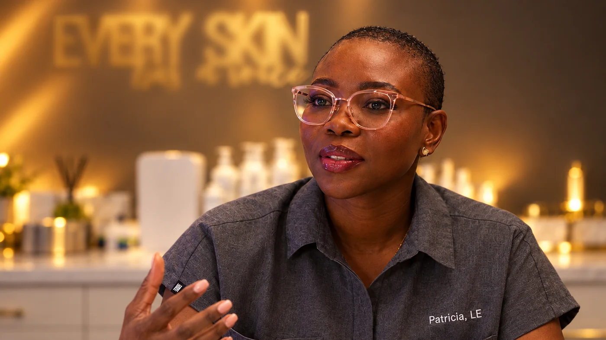
Cinema cameraYour studio · Concept in your roomFounder’s film, close
Same answers, tighter: the Lagos courtroom, January 2019, the reason you do this.
- Camera
- 85mm · eye level
- Light
- Same key, a little warmer
FeedsFounder’s film · Spots :15 :30 :60 · Hero film
- 12
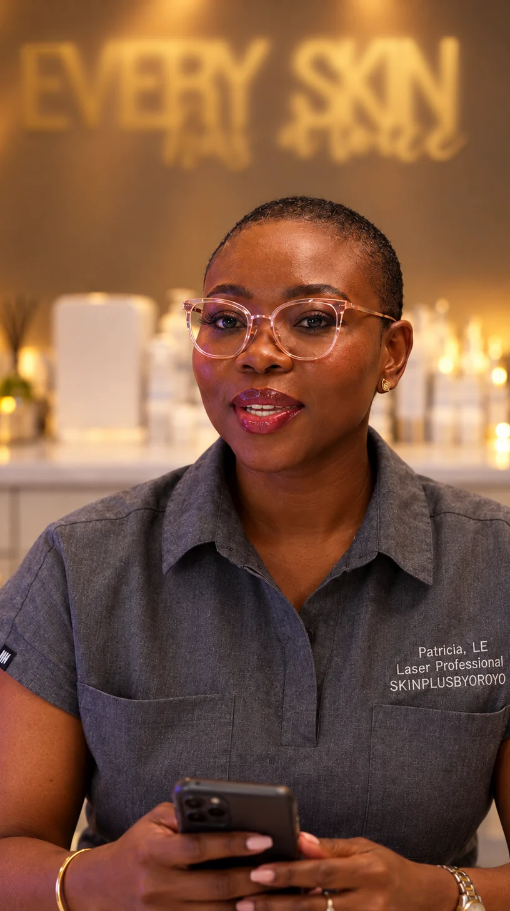
Cinema cameraYour studio · Concept in your roomThirty Seconds, to camera
You read a real client question, then look up and answer it straight down the lens. Framed vertical first.
- Camera
- 50mm · vertical · eye level
- Light
- Soft key, gold bounce
FeedsThirty Seconds
MiddayShots 13–18Consult and treatment
- 13
 Cinema cameraYour studio · Concept frame
Cinema cameraYour studio · Concept frameThe consult
You map the area on her skin and talk her through it. Same hands, start to finish.
- Camera
- 50mm · over her shoulder
- Light
- Warm lamp, soft window
FeedsTreatment film · Client stories · Spots :15 :30 :60 · Launch emails
- 14Cinema cameraYour studio · Concept in your room
The treatment room, wide
The room, wide: her in the chair, you at the laser, the gold rail behind.
- Camera
- 24mm · slow push in
- Light
- Overheads dimmed, warm lamp
FeedsTreatment film · Hero film
- 15
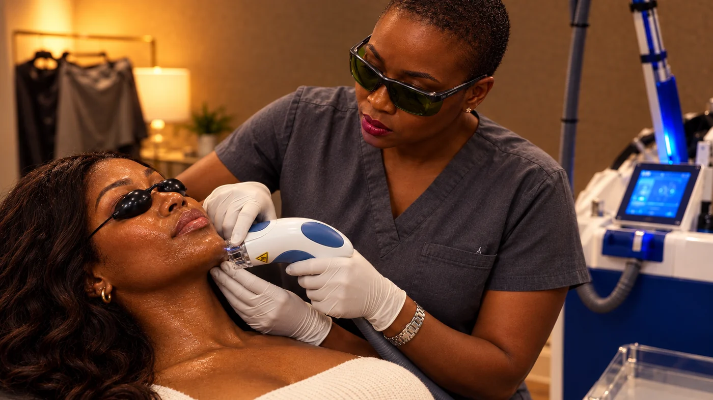
Cinema cameraYour studio · Concept in your roomThe laser pass
Her session. Goggles on, gloves on, the handpiece glides along her jaw.
- Camera
- 85mm · close and steady
- Light
- Warm lamp, cool screen glow
FeedsTreatment film · Spots :15 :30 :60
- 16
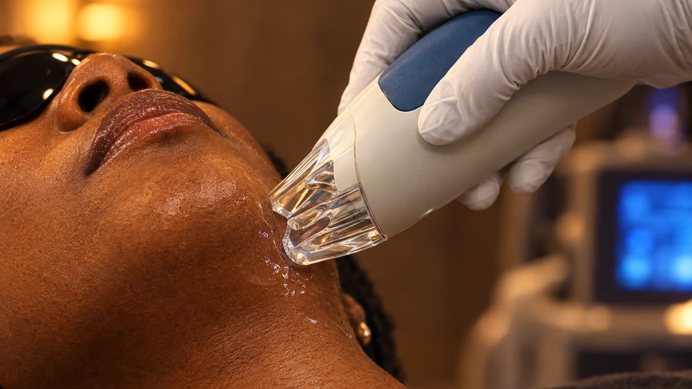
Cinema cameraYour studio · Concept in your roomHandpiece insert
Your handpiece at her jaw, one pass, then the next.
- Camera
- 100mm macro
- Light
- Edge light on skin
FeedsTreatment film · Beauty editorial · Spots :15 :30 :60
- 17
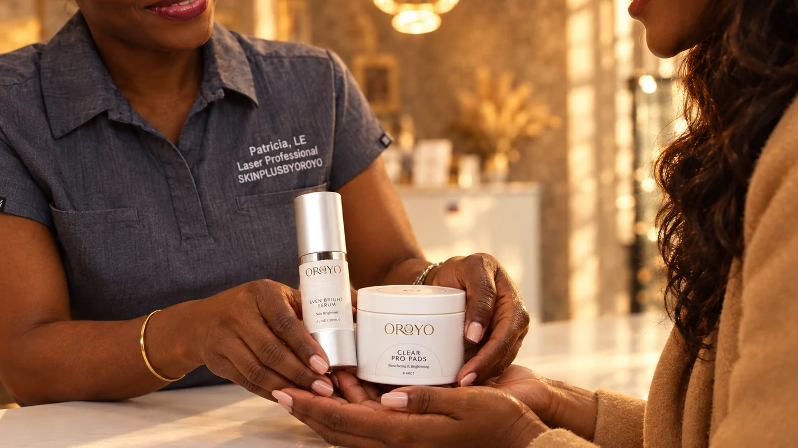
Cinema cameraYour studio · Concept in your roomThe aftercare hand-off
At the desk, you place her aftercare in her hands before she leaves.
- Camera
- 85mm · tight on hands
- Light
- Soft key, gold bounce
FeedsTreatment film · Beauty editorial · Spots :15 :30 :60
- 18Cinema cameraYour studio · Concept frame
The mirror check
One of your real clients touches her jaw in your arched gold mirror and smiles. The moment the campaign is named for.
- Camera
- 50mm · into the mirror
- Light
- Window light
FeedsClient stories · Spots :15 :30 :60 · Hero film · Launch emails · In-studio displays
AfternoonShots 19–21Client stories in your lounge
- 19Cinema cameraYour studio · Concept in your room
Client story, on location
A real client in your grey lounge chairs, your shelves glowing behind her.
- Camera
- 50mm and 85mm · two angles
- Light
- Window key, lamps on
FeedsClient stories · Spots :15 :30 :60 · Thirty Seconds
- 20
 Cinema cameraYour studio · Concept frame
Cinema cameraYour studio · Concept frameThe candid laugh
Between answers, she laughs. We keep rolling.
- Camera
- 85mm · handheld
- Light
- Window key, lamps on
FeedsClient stories · Hero film
- 21
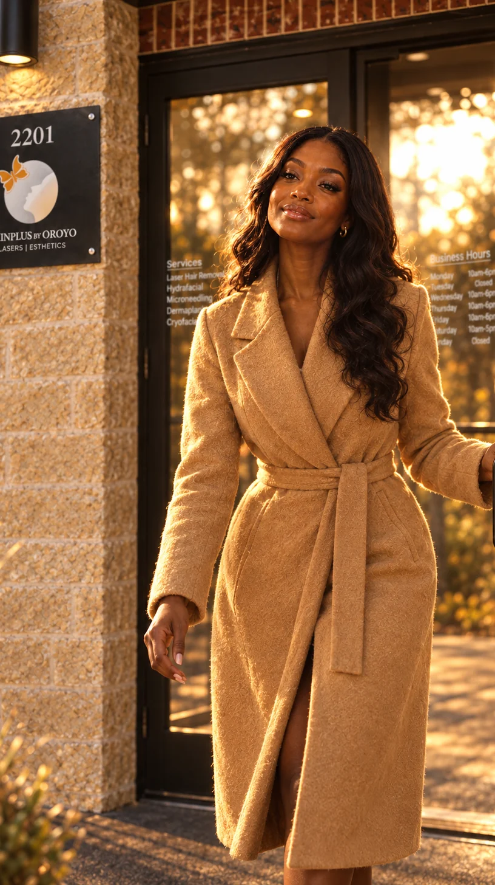
Cinema cameraYour studio · Concept frameThe walk-out
She pushes out of Suite 2201 into low sun, lighter than she came in.
- Camera
- 35mm · low on the walkway, she comes toward us
- Light
- Low sun behind her
FeedsSpots :15 :30 :60 · Client stories · Hero film
Late afternoonShots 22–24The Listening Room, built in your studio
- 22Cinema cameraThe Listening Room · Concept frame
Client story on black
Chest-up, eyes just past the lens, telling it her way.
- Camera
- 85mm · eye level
- Light
- Soft key, the black falls away
FeedsClient stories · Spots :15 :30 :60 · Thirty Seconds · Hero film · Launch emails · In-studio displays
- 23Cinema cameraThe Listening Room · Concept frame
Client story on black, his side
Three-quarter profile. Razor bumps, video calls, and what changed. On Day 3 he’s in Camera On, on my phone.
- Camera
- 50mm · slightly low
- Light
- Hard edge light along the jaw
FeedsClient stories · Spots :15 :30 :60
- 24Cinema cameraThe Listening Room · Concept frame
The payoff insert
Fingertips along a smooth chin. No words needed.
- Camera
- 100mm macro
- Light
- Top light
FeedsSpots :15 :30 :60 · Beauty editorial · Hero film
UGC day
Morning in your studio: her session, his consult, your Reply to Patricia batch. Afternoon at his place: his desk, his mirror, his call. All on my phone, front-camera style, with clients already a few sessions into their series.
MorningShots 25–29Her session, on my phone
- 25
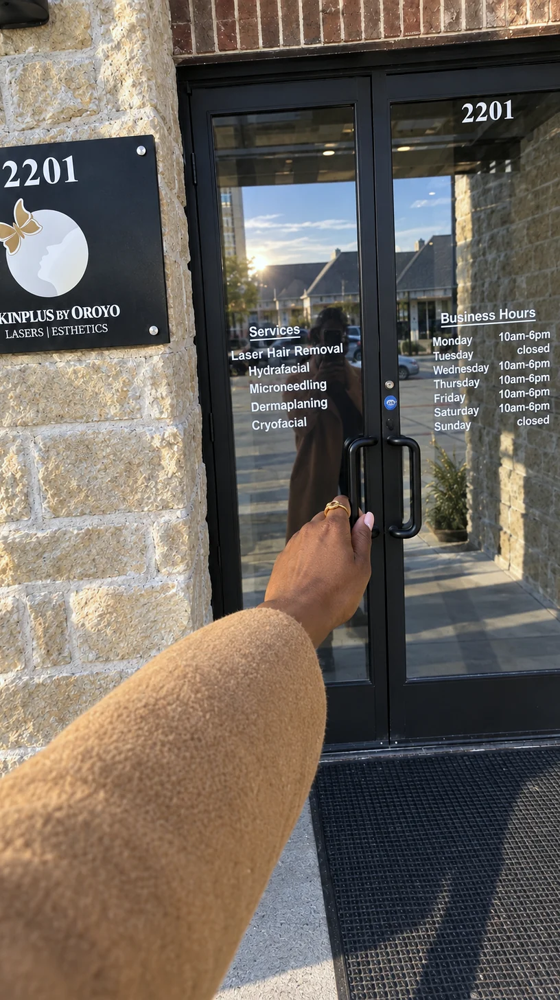
UGC · phoneConcept frameThe visit, POV
First person at your door, on my phone: her hand on the handle, the visit as she would post it.
- Camera
- My phone · 0.5x · first person
- Light
- Flat midday light
FeedsUGC · Spots :15 :30 :60
- 26UGC · phoneConcept frame
Same hands, on my phone
My phone propped low on the counter during the consult: you map her jawline with gloved fingertips.
- Camera
- My phone · propped low on the counter
- Light
- The room’s own overhead light
FeedsUGC · Client stories · Treatment film
- 27
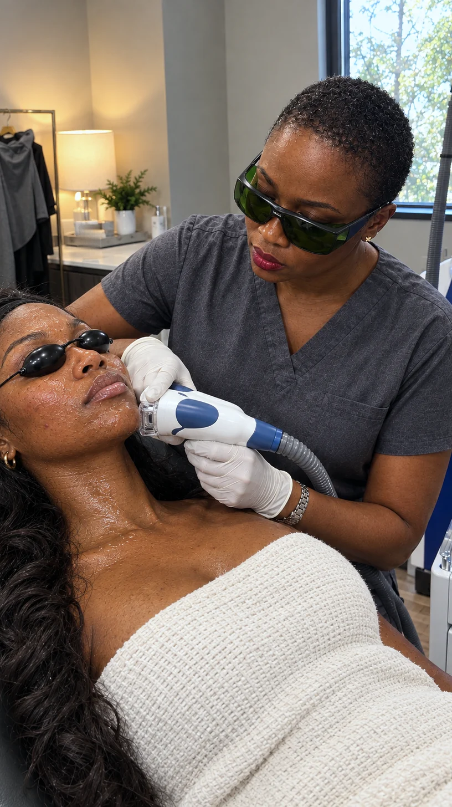
UGC · phoneConcept frameThe laser, on my phone
Same phone, same spot on the counter: goggles on, eye shields on, the handpiece along her jaw.
- Camera
- My phone · same spot, same angle
- Light
- Overheads, the laser screen glowing
FeedsUGC · Treatment film · Spots :15 :30 :60
- 28UGC · phoneConcept frame
Her mirror, weeks in
In your lounge’s arched gold mirror: her mirror selfie on my phone, fingertips at her jaw, a small real smile. She’s a few sessions into her series.
- Camera
- My phone in her hand · into the mirror
- Light
- The lounge’s own light
FeedsUGC · Spots :15 :30 :60 · Launch emails
- 29UGC · phoneConcept frame
The Console
In her SUV after the session, my phone in her hand, front camera: the tweezers she keeps in the console, in her own words. It opens her clip.
- Camera
- My phone in her hand · front camera
- Light
- Noon glare on the windshield
FeedsUGC · Client stories · Spots :15 :30 :60
MiddayShot 30His consult, on my phone
- 30UGC · phoneConcept frame
His consult, on my phone
The client from the Listening Room, a few sessions in, in your chair: my phone propped on the counter while you map his neckline below the beard.
- Camera
- My phone · propped low on the counter
- Light
- The room’s own overhead light
FeedsUGC · Client stories · Treatment film
Between clientsShot 31Reply to Patricia
- 31UGC · phoneConcept frame
Reply to Patricia
My phone in your hand at arm’s length: a real comment from your page, answered on video with the platform’s own reply sticker.
- Camera
- My phone in your hand · front camera
- Light
- The room’s own light
FeedsUGC · Thirty Seconds · Founder’s film
AfternoonShots 32–34At his place
- 32UGC · phoneConcept frame
Camera On, at his desk
At his own desk: my phone on the laptop lid, two fingers along the razor bumps below his beard before a call. It opens his clip.
- Camera
- My phone · propped on the laptop lid
- Light
- Screen glow, warm lamp behind
FeedsUGC · Spots :15 :30 :60
- 33UGC · phoneConcept frame
His mirror, weeks in
At his place: his bathroom mirror, the neckline below his beard, the razor unused by the tap.
- Camera
- My phone · propped on the sink edge
- Light
- His bathroom’s own window light
FeedsUGC · Spots :15 :30 :60
- 34UGC · phoneConcept frame
His call, weeks in
At his desk, sitting back in a crisp shirt, hand off his face, about to join his call.
- Camera
- My phone · propped on the laptop lid
- Light
- Screen glow, window behind
FeedsUGC · Spots :15 :30 :60
On location
Their world, acted, from first light: a parking garage, a courthouse, then one house for three scenes.
DawnShot 35A parking garage
- 35Cinema cameraTheir world · Concept frame
The garage at dawn
A nurse practitioner in her car, tweezers at the visor mirror before her shift.
- Camera
- 40mm · from the passenger seat
- Light
- Cold garage light, warm visor bulb
FeedsSpots :15 :30 :60 · Hero film
MorningShot 36A courthouse restroom
- 36Cinema cameraTheir world · Concept frame
Court at nine
Minutes before a hearing, an attorney checks her jaw in the courthouse restroom mirror.
- Camera
- 50mm · into the mirror
- Light
- Cool fluorescent
FeedsSpots :15 :30 :60 · Hero film
Late morningShots 37–39One house, three scenes
- 37Cinema cameraTheir world · Concept frame
The razor
The morning shave and the bumps that come with it.
- Camera
- 85mm · tight
- Light
- Cool morning window light
FeedsSpots :15 :30 :60
- 38Cinema cameraTheir world · Concept frame
The call preview
An executive checks his jawline in the call preview before he joins.
- Camera
- 35mm · over his shoulder
- Light
- Screen light, window behind
FeedsSpots :15 :30 :60 · Hero film
- 39
 Cinema cameraTheir world · Concept frame
Cinema cameraTheir world · Concept frameThe restroom mirror
Our nurse, mid-shift, tweezers at her chin again. A home bathroom lit like a hospital restroom.
- Camera
- 35mm · over her shoulder
- Light
- Hard overhead fluorescent
FeedsSpots :15 :30 :60
No shots match both filters.
Seven pieces
from one shoot.
Every film comes wide 16:9 and vertical 9:16, and every piece ends on a single ask. Every shot on this page feeds at least one of them. Images here are concept frames.
The hero film
Two minutes that tell the whole story, from the first mirror check to your butterfly.
Ends onBook Now
Built from 17 shots →Campaign spots
:15 · :30 · :60, wide and vertical, for paid social. Some open on a UGC clip, labeled UGC · phone.
Ends onBook Now
Built from 29 shots →Founder’s film
What you do, when it began, why you do it.
Ends onBook Consultation
Built from 4 shots →Client stories
Under two minutes each, plus short soundbites.
Ends onBook Consultation
Built from 13 shots →Beauty editorial
Your aftercare: :15 and :30 films plus stills.
Ends onShop at oroyoskincare.com
Built from 8 shots →Thirty Seconds
A real client question, your answer, a client who confirms it. Built vertical.
Ends onBook Consultation
Built from 6 shots →
The Campaign
The photoshoot, the cinematic day and the location day: the seven pieces above, every spot ending on your butterfly.
Hold the dates →- Recommended
The Campaign + UGC
Everything in The Campaign, plus Day 3 and the full UGC program: casting, the flagship clips, Reply to Patricia, partnership ads and the launch hook test.
See Look E ↑Hold the dates → Seen Monthly
Ongoing after launch: a UGC half-day with new clients at their regular sessions when it’s time, a new Reply to Patricia batch, refreshed hooks and a read on which clips send people to Book Now.
Ask about monthly →
How it rolls out, and add-ons
Shoot days, launch, then every month.
- Phase 1
Shoot week
Four days: the photoshoot, the cinematic day, the UGC day, then on location.
- Phase 2
Launch
The flagship clips, the first Reply to Patricia batch, partnership ads and the hook test.
- Phase 3
Every month
A UGC half-day when it’s time, new Reply to Patricia batches and refreshed hooks.
Launch emails
A short series for your client list, built from the same shoot: the stills, the spots and your words.
Ends onBook Now
Built from 11 shots →In-studio displays and print
A pull-up banner, a lobby poster, a desk card with a Book Now QR, and a rebook card in every aftercare bag with your booking QR, all in the campaign’s look.
Ends onBook Now
Built from 5 shots →
Real clients stay real.
Testimonials and UGC are your real clients, past and current, in their own words. Actors play the everyday moments and the walk to your door, and never speak as clients.
You approve every cut.
Every client signs a release before we film, sees their story before it runs, and chooses how they appear: face, voice only, or hands and skin. Nothing goes live without your yes.
Filmed for real.
These frames are sketches to plan the days. What you receive is real footage of real people in your real rooms.
The campaign
you mentioned.
Black Girl Sunscreen, shot by me: melanin-rich skin, lit true, the product in frame and the person still the story.
Black Girl Sunscreen × The Little Mermaid SPF 30 · campaign stills · Taylormade Creative
Hold your dates.
Pick a week and text me. Tell me which clients you’d like to ask, past and current, and I’ll take it from there.
Next: a 15-minute call to lock the plan, then the agreement that holds your dates. On that call we set two things first: how many of each piece you get, and how long you’re on camera. The days in your studio are planned around your bookings, so nothing on your calendar moves without your say.
Your circled frames ride along with either text.
Creative director in Dallas–Fort Worth for fourteen years. Photography, film and motion, under one roof. See the work